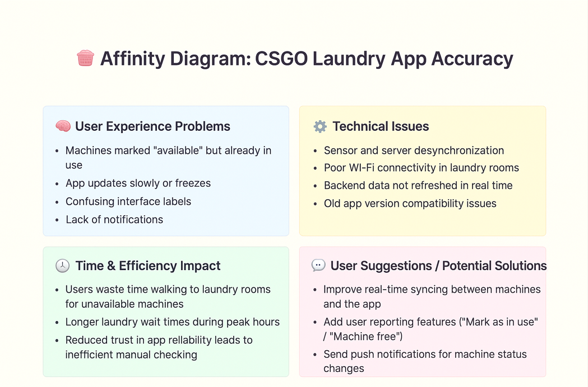
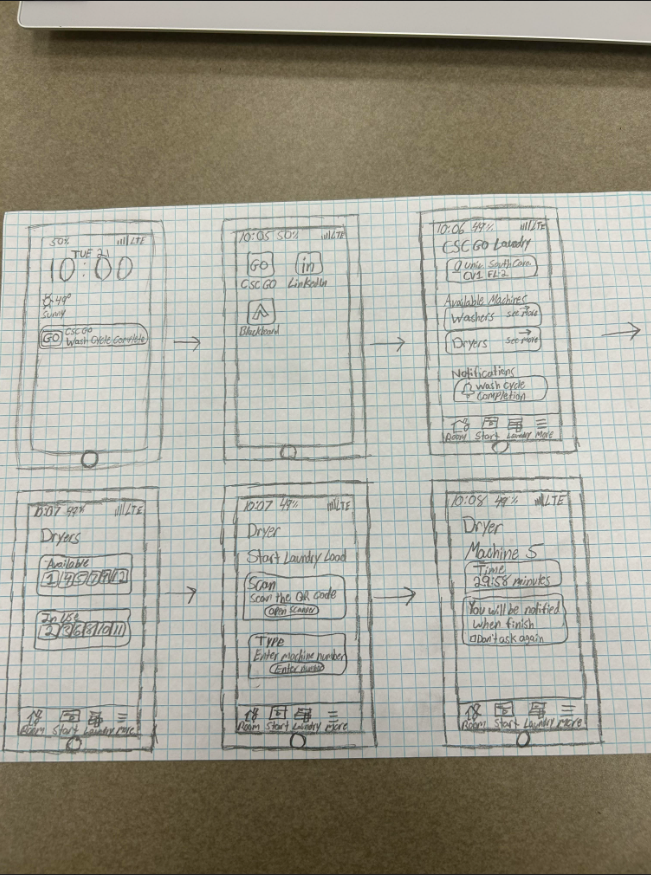

Problem Statement

The CSGO app that is used for the laundry room is almost never correct.
Affinity Diagram
The purpose of this diagram is to organize and analyze the apps usability issues so we can determine targeted solutions that will optimize performance and user satisfaction.
Sketches
This sketch illustrates potential improvements for the app, such as providing accurate washer and dryer availability and sending users notifications when their cycle is complete or nearing completion.
Algorithmic Design Java Code

This is a small Java code that I made to play rock paper scissors.